In this module, we continue our move away from purely-desktop GIS operations to the exciting land of the web and web mapping. Within this module, we introduce a new key player in the web mapping world: CARTO, which has recently rebranded from CartoDB in July 2016. While their transition isn't quite complete yet, e.g., map elements like titles and photos cannot be placed on a map, but the new CARTO help documentation is getting better.
We can think broadly of CARTO as contributing to the backend of our web mapping process, particularly how we store and access our data. They also provide the ability to make effective data-driven web maps quickly through their web interface, JavaScript library, and web services.
We'll first create a CARTO account and briefly get acquainted with some of the awesomeness that it provides. Then, we'll figure out how to link it up with QGIS. Once we do all that, we'll be ready to explore a use case to see how we can integrate CARTO within our mapping workflow. Specifically, we're going to begin by making a US counties choropleth map by joining some tabular data to some county polygons.
Let's get started!
The first step is to visit the New Maps Plus CARTO website: https://nmp.carto.com and create an account using your uky.edu email. We have an educational account with CARTO, which gives us a few extra services.
You'll want to choose a good user name and take some time and set up your CARTO profile. Eventually, you'll be producing some maps with CARTO, and they offer a nice public-facing interface with which you can share some of your maps and data. They even offer an option to indicate that you're "Available For Hire," so if you're able to make a few compelling maps hosted on CARTO, perhaps a potential employer will find you!
If you want to create additional CARTO accounts, just use a different email than your uky.edu address. You can create additional accounts by following this link: https://CARTO.com/signup. This basic, free plan will give you 250MB of data.
If you spend some time looking through CARTO's website – and you should! – you'll see that you can use CARTO to perform an amazing array of mapping tasks (some of which we've been completing using QGIS). In particular, you'll want to minimally glance through:
CARTO's educational materials are quite excellent, and New Maps Plus encourages you to spend time reading through these and practicing some of their tutorials. The mapping and GIS world is immense, and the more ways you can approach problems and hear the material articulated, the better of you will be.
Once you've created an account and logged in, there are couple key things we want to point and explore before we dive into the exchange of data and maps between QGIS and CARTO. First, note that there are two "views" within CARTO: a maps view and a datasets view. Pay attention to which one you're in, as you'll be switching between the two as you work with CARTO. These are accessed in the upper-left of the webpage next to your name.
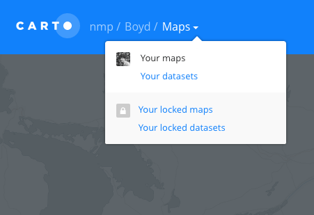
Figure 01: CARTO Dashboard. Take some time to familiarize yourself with the CARTO Builder interface.
Since you likely have neither maps nor datasets yet, let's first practice getting data into CARTO.
CARTO's interface is incredibly flexible and offers various ways to access datasets already hosted by CARTO, as well as to load data onto their web servers.
A predictable way to get data into your CARTO account is to simply upload a file or directory from your computer. To do this, first select New Dataset (you'll need to be in the datasets view of your dashboard and not the maps view).
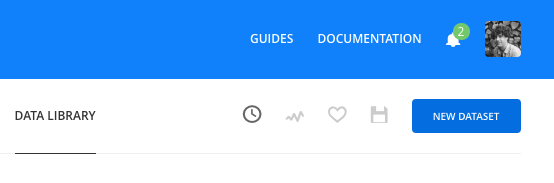
Figure 02: Selecting a new dataset in CARTO
CARTO supports an impressive variety of file formats including Shapefiles, GeoJSON, comma-separated and tab delimited files, and different spreadsheets. It also supports uploading compressed .zip and .gz files (i.e., your bundled Shapefiles in a .zip file).
Try uploading the UninsuredByCounty_2016.csv file included with this module (you may wish to examine the CSV file first within Open Office or a text editor). This CSV shows percent of county population without health insurance in 2013 and 2016. From CARTO's Connect dataset page, choose Data file and Browse, locate the file in your local directory structure, and then click Connect Dataset. You can also drag and drop the file from your local window into the browser.
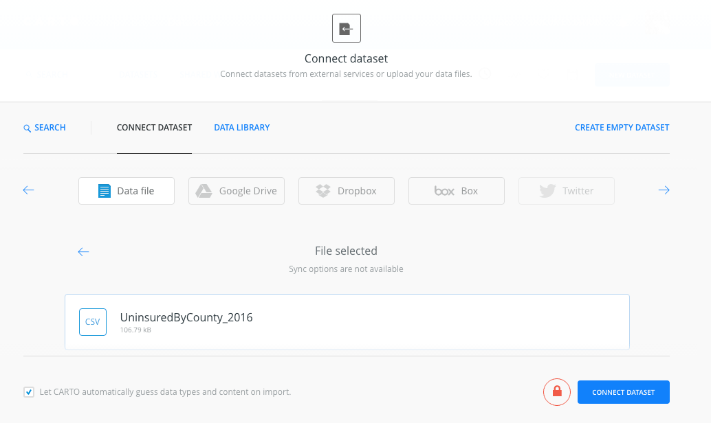
Figure 03: Selecting a new file
Note the option at the bottom to "Let CARTO automatically guess data types and content on import." Let's leave this check for the moment to see what happens. Also, note the red lock that signifies that your dataset is private. We'll need to pay attention to this setting if we publish maps and want to share our data.
Once uploaded to and processed by CARTO, you will see your data in the Data View. Note that the values within the_geom attribute column for this file are all "null." This is simply tabular data with no spatial information. There are attributes such as state and county names, as well as FIPS ids, with which we can perform a tabular join with some county geometries. However, note that within the county_fips column (which is designated as a number type), CARTO has stripped off the leading zero. CARTO has automatically guessed this field to be a numeric type, and in doing so removed the leading zero. This can create a problem when attempting to do a Join, a problem we'll return to a bit later.
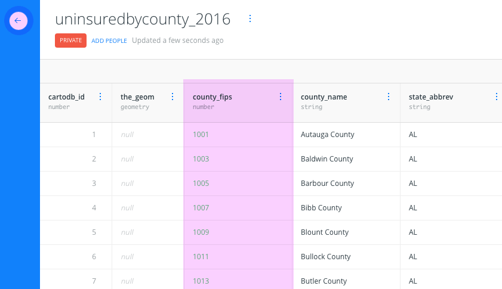
Figure 04: The leading zeros of the County FIPS codes have been stripped in the default data connection. To get back your Dashboard, click on the upper-left corner CARTO logo.
Try re-importing the CSV file, but leave the option to "Let CARTO automatically guess data types and content on import" unchecked. This time, you'll notice that CARTO has treated every field as a text string. This can be inconvenient, as you'd then need to manually change each field type (something that CARTO makes quite easy). The advantage is, however, that the leading zero of a column such as our state+county FIPS codes is retained. Again, this small example underscores the importance of paying attention to data types when working with geospatial information.
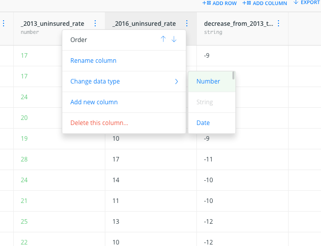
Figure 05: Change your field data type to "Number" for the percent uninsured rate fields.
It's a best practice, once you upload data to CARTO, to immediately enter metadata about the data (click on Edit metadata... to the right of the title "uninsuredbycounty_2016" and fill in the fields). The source of the data is Enroll America, a nonprofit, nonpartisan health care coalition.
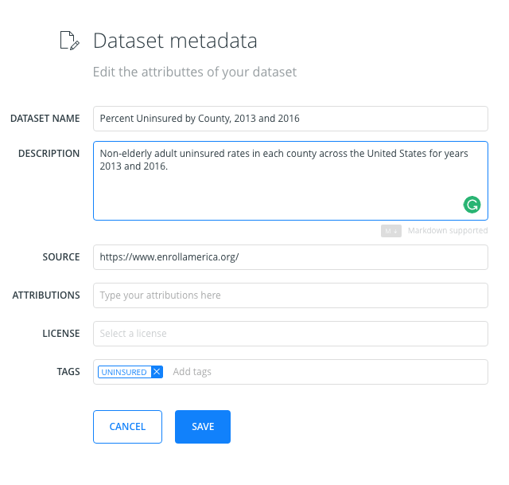
Figure 06: Entering metadata for the new dataset
Let's move on now to get some good county data to join with these uninsured data?
A powerful and useful feature of CARTO is the ability to load data from a remote source URL simply by pasting in a URL. In the Connect dataset page of CARTO, we wee a variety of options for loading external data into CARTO. These include data stored within Google Drive or Dropbox. This can be a great solution for giving a client the ability to update a map with new data (e.g., they a simply update the values in a sharedGoogle Spreadsheet document and CARTO will pull in the new information).
While we've seen how Natural Earth is great for grabbing quick Shapefiles, another excellent resource for mapping with the United States is the Cartographic Boundary Shapefiles. These files have been generalized and simplified at various scales for a variety of political sub-units.
Click on the counties and then copy the following URL: http://www2.census.gov/geo/tiger/GENZ2015/shp/cb_2015_us_county_20m.zip.
Paste this URL into the designated field and choose Submit.
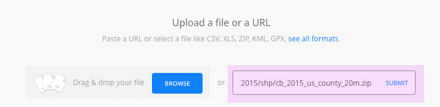
Figure 07: Connecting a remote database to your CARTO account
CARTO also allows you to Sync this dataset if you choose, meaning that if the source data is updated, CARTO will pull in any changes to the file. There's no need to do this now, but if you were using an external data file that is constantly updated, then this could be reflected in the Synced CARTO dataset.
Choose Connect Dataset. CARTO fetches the file, unzips it, and loads it into your account.
When finished processing, CARTO will open the data in the Data View.
First, note that these data encode the state FIPS codes and the county FIPS codes in separate columns, unlike the uninsured adults data we loaded into CARTO above. This will present a challenge for us to complete our anticipated table join. However, the state and county FIPS codes within the county Shapefiles are loaded into CARTO as string types, rather than number types. This usefully prevents the leading zeros from these codes from being removed.
Again, we should enter some metadata for these data before continuing.
Second, note that the the_geom field contains Polygon information. Double-click on one of these values within the the_geom field. What you're presented with is the GeoJSON encoding of that polygon, in this case encoded as a "MultiPolygon" with latitude and longitude coordinate pairs. CARTO converts the uploaded geometries, whether Shapefile or georeferenced CSV, into GeoJSON format.
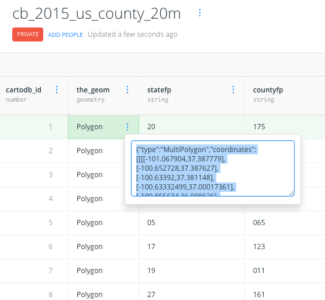
Figure 08: the_geom field values Polygon information are encoded as GeoJSON. Be careful not to edit these values (unless you want to change the location features).
Select Create Map to see the county polygons drawn to the map. CARTO will, by default, display the county boundaries with a solid orange color using the Web Mercator projection.
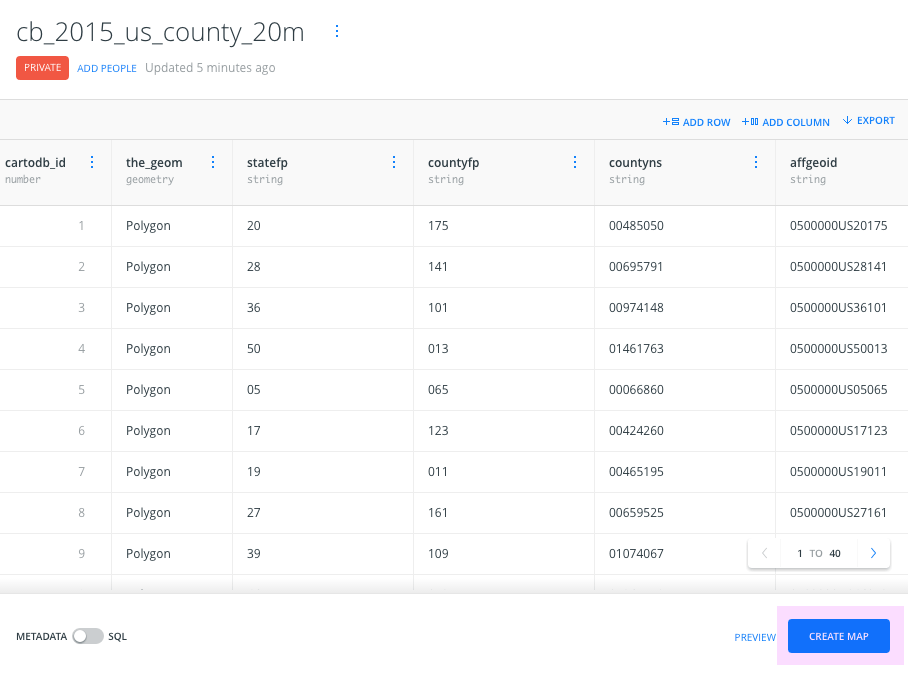 Figure 09: Create Map of US Counties drawn with default settings
After you create the map, you presented with CARTO's new Builder interface. The left column represents your layers on the map. The bottom layer, Positron Basemap, is a mapping tile service that has baseman features rendered at different scales. This is the classic "slippy map". The basemap labels are a separate layer on top of the county polygons. Click on the Positron Basemap to change your basemap. While we can add many layers to this map, we cannot change the default basemap settings or styles.
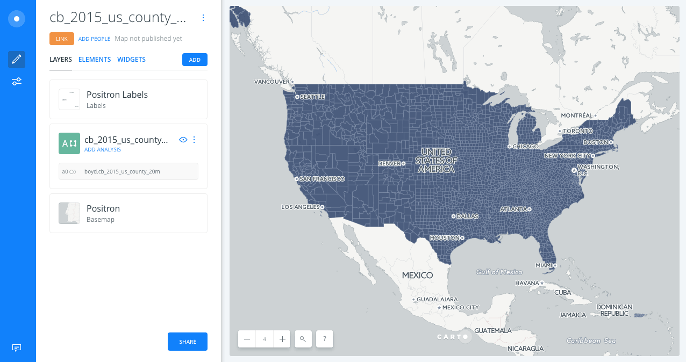
Figure 10: Default Builder view
Click on your county polygon layer cb_2015_us_county_20m to access the new Builder functions. In the DATA panel we are shown our attribute table columns and the "Add as a widget" option. A widget is a simple visualization technique for your attribute data. It can create a histogram, time series, or do summary statistics on your data. The ANALYSIS pane provides tools similar to the ones we use in QGIS. We'll investigate these features later.
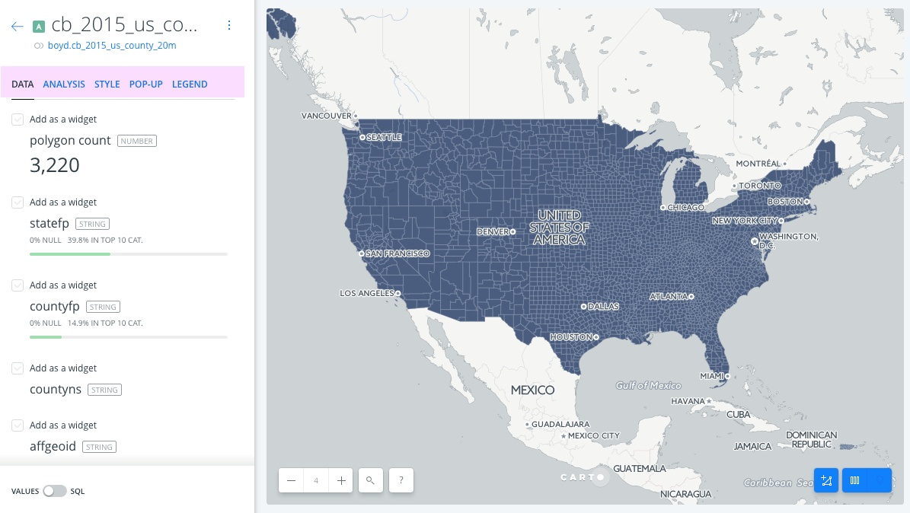
Figure 11: Builder panels for layers
Access the STYLE panel. This visualization tool is simple looking but rather powerful. We can change the polygon's fill color, either as a single symbol or by an attribute, the polygon stroke, and the blending mode with other added layers. Click on the FILL symbol to change the color of the polygon fill color. Under the SOLID mode we can change the color with three pickers. We are offered HSLa sliders, hexadecimal, and RGBa. The lowercase "a" stands "alpha channel", the amount of opacity in the layer. The sliders can change the Saturation and Lightness (top slider), the Hue (second slider), and the opacity (third slider).
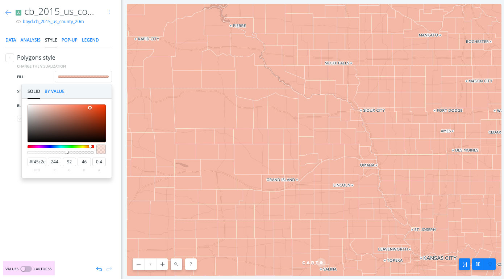
Figure 12: The polygon fill color picker with an opacity set to 0.4.
Note the VALUES/CARTOCSS switch at the bottom of the Builder layer's STYLE panel. Toggle this to enter the CartoCSS editor. Within this text editor we see the CartoCSS style rules that dictate what is displayed on the map and how. "CSS" is an acronym for Cascading Style Sheets, one of the web design markup languages. We're not going to spend a lot of time worrying about how to write these style rules form scratch right now. We recommend you read through CARTO's CartoCSS documentation to gain more understanding.
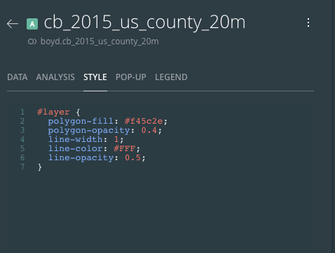
Figure 13: The CartoCSS editor.
However, let's quickly walk through what's happening with this CartoCSS code.
A style "rule" (line 1 #layer) selects our layer, i.e., our county polygons, using the hashtag and applies the style rule properties (contained within the curly brackets) to those features. These property rules include the polygon-fill and polygon-opacity of the polygons (lines 2 and 3), as well as the line-color, line-width, and line-opacity of the lines (lines 4-6).
CartoCSS is quite powerful. For instance, we could add a second layer definition to create cartographic effects like cased lines and fuzzy borders. Since the code is simple text, we can easily modify and share our symbolization properties. Consider the Figure 13 graphic and code block below. A copy of the layer was generated with #layer::2 note the "2" suffix is arbitrarycould be any value, e.g., #layer::mysecondlineeffect or it could be left and use #layer again). The line width and opacity were modified to create a glow around the polygon (lines 14-16). It is encouraged that you also add comments to help organize your code (line 9).
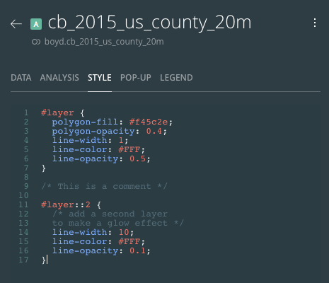
Figure 14: Adding a copy of the layer for cartographic effect.
#layer {
polygon-fill: #f45c2e;
polygon-opacity: 0.4;
line-width: 1;
line-color: #FFF;
line-opacity: 0.5;
}
/* This is a comment */
#layer::2 {
/* add a second layer
to make a glow effect */
line-width: 10;
line-color: #FFF;
line-opacity: 0.1;
}
Knowing all the property names (e.g., the polygon-fill and line-opacity) is the tricky part of learning a styling language such as CartoCSS. The values are easier to play with, however. In this case, the color values are encoded as hexadecimal values, opacity values are decimal numbers between 0 and 1, and the line width is whatever number you'd like. The value #f45c2e is a hexadecimal color code.
Feel free to play around with them within this editor. For instance, try changing the color and adding a second copy of the layer for effect. You can see the style after you hit the Apply button at the bottom right. The arrows are for undoing and redoing your CartoCSS edits.
One more important consideration. If you switch to CartoCSS editor, you cannot switch back to the color picker. You can, however, switch into the CartoCSS editor after you apply styles in the default color picker. Also, you should think about copying your CartoCSS code and saving it to your local computer as a text file with a .css file extension.
That's enough basics on data loading and the interface tour for now. We highly encourage you to take some time to further explore CARTO's tutorials and documentation on your own.
To link CARTO with QGIS, first install the QGIS CartoDB Plugin (i.e., go to Plugins -> Manage and Install Plugins... and search for "QGIS CartoDB" like we've done with other plugins).
After it's installed, be sure to enable your Web Toolbar within QGIS (View -> Toolbars -> Web).
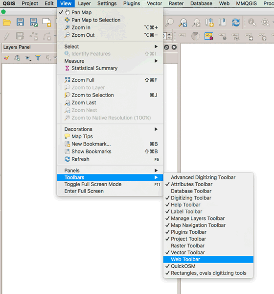
Figure 15: Enabling the Web Toolbar
With this toolbar enabled, we should now see several icons associated with the QGIS CartoDB plugin:
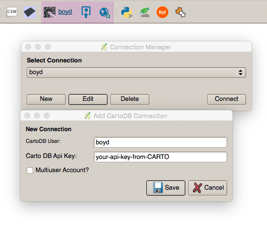
Figure 16: QGIS CartoDB icons in the QGIS Web Toolbar after a CARTO connection has been added.
The icon buttons will be different until we connect to our CARTO account. The options we are given allow us to download and upload layers from the account, as well as load a map directly from QGIS to CARTO.
Click on Add Connection to open the Connection Manager dialog box. Then choose New to create a new connection. This will open the Add CARTO Connection dialog box.
You'll enter your CARTO User name in the first field. To access your CARTO API key, you'll need to be logged into your CARTO account and go to "Your API keys" (https://your_username.CARTO.com/your_apps). You can also click on your avatar within the CARTO dashboard and choose "Your API keys."
Copy your API key from the CARTO website and paste it into the Add CARTO Connection dialog box, and choose Save. Your username will now appear as a Connection in the Connection Manager. Choose Connect to connect QGIS with your CARTO account.
Once the connection is made, we can start doing all sorts of fun things with QGIS and CARTO. To demonstrate a common use, let's perform a tabular join between the US counties layer and our uninsured adults data to make yet another classic choropleth map. Our goal then is to use QGIS to perform the join and populate the county shapefile data with the uninsured data. When complete, we'll push this data back up to CARTO and use it to make a web map.
To begin, let's pull down those data of the US counties we just uploaded to our CARTO account (we're not going to use the copy of the uninsured adults data we uploaded to CARTO, so feel free to delete it from your account). Click on the Add CARTO layer button/icon found in the Add Data Toolbar.
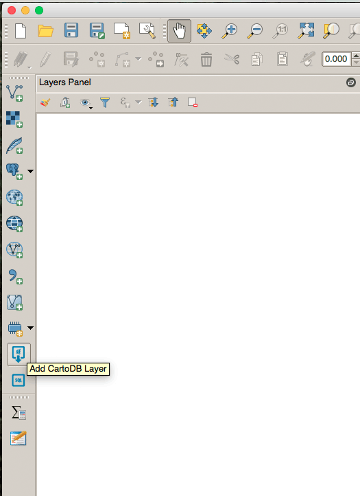
Figure 17: Adding a CARTO dataset
This will open a Add CARTO Layer window which will display all your available datasets, as well as inform you of your available data usage. Choose both layers we previously loaded into CARTO by selecting the desired layers.
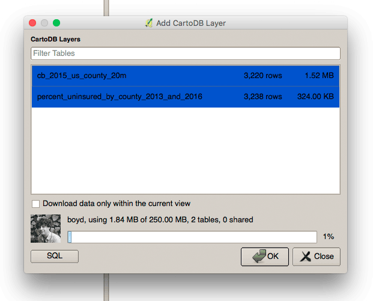
Figure 18: Adding a multiple CARTO layers
After downloading, we'll see a very familiar layout of the vector data within QGIS Map Pane and the layer listed within the Layers Panel at left. So far this is operating like any other file we've loaded into QGIS from our local source. For instance, we can go into the layer properties to see the Coordinate Reference System or symbolize the data in some way.
However, there is one important distinction between this data layer and others we may load into QGIS from our local machine. Open the layer's Properties and look at the General tab. Note that under Layer source it provides a rather curious path (this path will be different on a Window's OS): /var/folders/sv/pxq317111lg7xvm82my900h40000gn/T/tmpDECcg5. What is this tmpDECcg5 file to which the source is pointed?
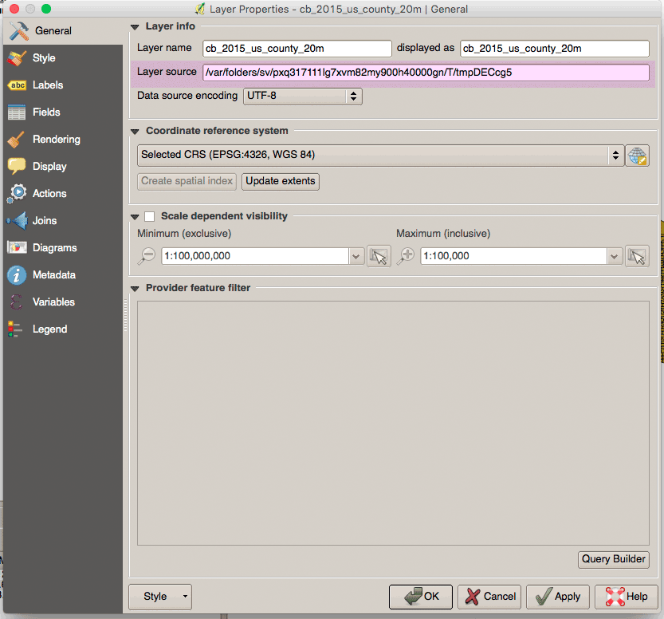
Figure 19: Identifying the temporary layer source
It doesn't look like any other data format we've worked with so far (e.g., Shapefile or GeoJSON files). Here QGIS and the QGIS Plugin are storing a temporary version of these data as a binary file (i.e., we aren't meant to directly read this file within our file/directory structure). This means that if we wish to make edits to the geometry or to attribute table, or do any geoprocessing, we first need to save a local copy of these data in another format. Choose GeoJSON as your new layer file format.
Go ahead and right-click on the layer, choose Save As... and save it a new Shapefile within your project's data directory. Give this new layer a different name than that which we imported from CARTO, cb_2014_us_county_20m, such as us_counties.
Now we wish to edit the attribute table within this US counties Shapefile to concatenate the state FIP code ("statefp") with the county FIP code ("countyfp") and store these within a new column. Do this, open the Attribute Table and then click on the Field Calculator. This will automatically open the Editing mode of your Shapefile's attribute table as well.
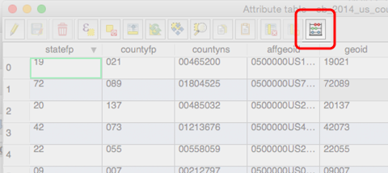
Figure 20: Opening the field calculator
Within the field calculator we want to keep Create a new field checked and provide a name for the new output field ("fips" works fine for this now). Change the Output field type to "Text (string)". Even though the FIP ids could be encoded as number types, encoding them as string types ensures that we don't lose the leading 0s on some of the IDs, especially when we import the Shapefile back into CARTO.
In the Expression dialog box we want to enter "statefp" + "countyfp". Note that because these are string types, it will concatenate them together, and not calculate them as if they were numbers. You can also access the available fields under the dropdown menu of Fields and Values.
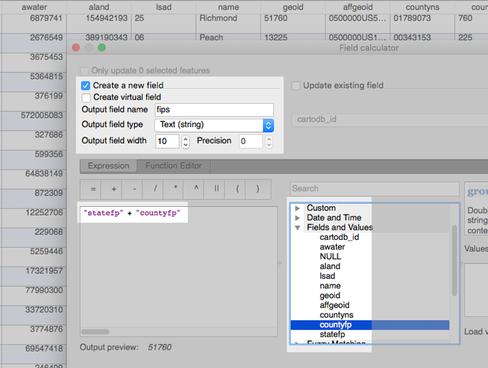
Figure 21: Using the field calculator to concatenate field values
Read more about using the Field Calculator and building Expressions in QGIS.
Once you have entered these values, click OK. QGIS will create a new field named "fips", in which you see the newly created string values. You'll want to now toggle off the editing mode. QGIS will prompt you to Save the changes to the layer, which you do want to do by clicking Save. Close your attribute table.
You might have noticed, we already had a geoid field in the counties layer that could be used for an attribute join. We wanted to illustrate using the Field Calculator on text strings. Building attributes like this will be helpful when you need to produce a minimized attribute table for interactivity in CARTO. Interactive pop-up boxes use your attributes for content and can often cleaned up and aggregated. Imagine if you could minimize a couple fields in OSM data to one field:
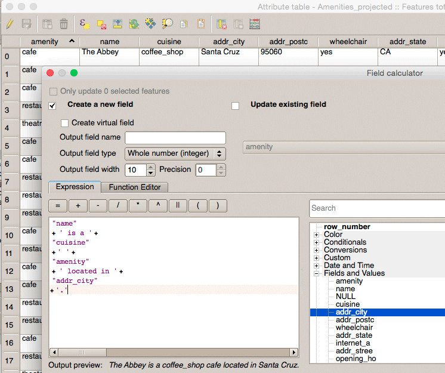
Figure 22: Using the field calculator to concatenate field values into new strings for pop-up boxes. Note the Output preview is a more friendly presentation of the attributes.
Next, let's import our uninsured adult data into QGIS. The best way to do this, and not have QGIS also strip the leading zero from our FIPS data attribute values like CARTO did, is to drag the file directly from your browser window into the Layers Panel of QGIS. You can also use the .csvt file with one line indicating the data types, "Real" and "String" for the appropriate type. If you then inspect this attribute table within QGIS, you'll see the FIPS id codes have been imported while retaining the leading zero. However, if you added this file as a Text Delimited File (with "no geometry" checked), you'd like run into some problems.
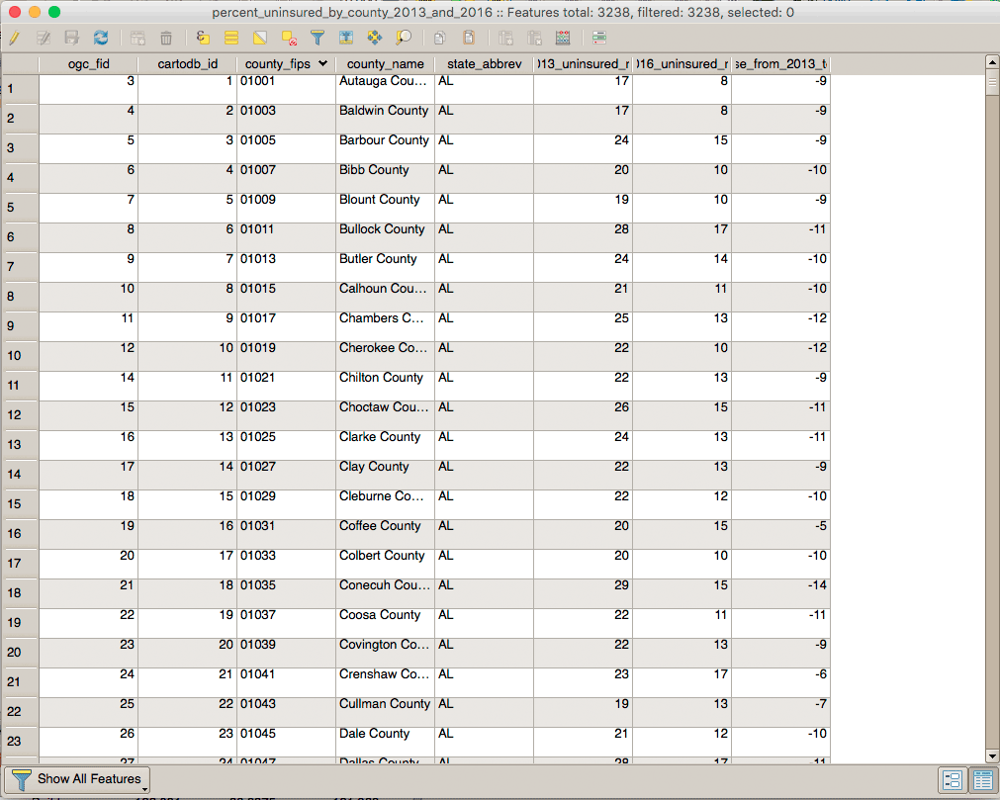
Figure 23: Verifying that the leading zeros of the FIPS field values are retained
Now we're ready to perform our trusted table join. To quickly walk you through the steps again:
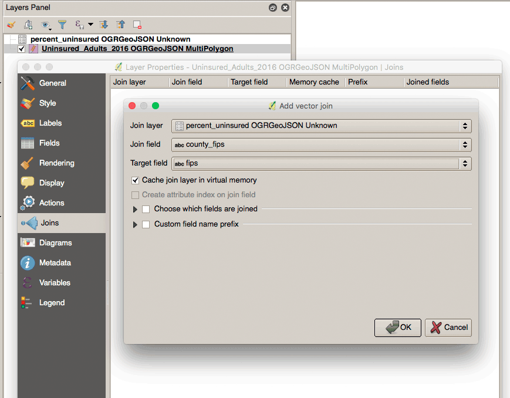
Figure 24: Settings for joining the uninsured adults data to the county polygons. Note that you should a field call fips that you just created in QGIS.
We can verify that the table join was successful by again opening the us_counties layer's attribute table. Sorting the features by the geoid ID will verify that the insurance was applied to all the features, including those beginning with a zero (e.g., "01001"). Close the attribute table.
Now that we've joined the data to our geometries, we could continue to make a choropleth in QGIS. But let's instead push this new Shapefile back up to CARTO and use it to make a web map.
Before we push our data back up to CARTO, we need to save a new Shapefile layer to ensure that the table join is permanently encoded within the layer. Choose Save As ... to a new GeoJSON layer and name it uninsured_adults_county (or something else fitting). CARTO will import the data using this name and later use it to create maps. Create the new Shapefile with the geographic CRS of WGS84 and make sure it's added to your QGIS project.
Note that because our CARTO account size is limited, we can also reduce the size of the datasets by deleting field columns we're not using. We'll skip this step for now, but if you wished you could use the Table Manager to delete such columns as aland, awater, etc. This is less important with a fairly small dataset like the one we're now working with. However, sometimes you'll bring in a dataset with thousands of features and many data fields you don't need. It's worth trimming the file size down in these cases.
Click the Upload layers to CARTO button, choose the uninsured_adults_county layer from the Project Layers, and click Upload. Note that leaving Add CARTO layers to project will add this layer to the QGIS project (which we don't need right now, so go ahead and uncheck this option).
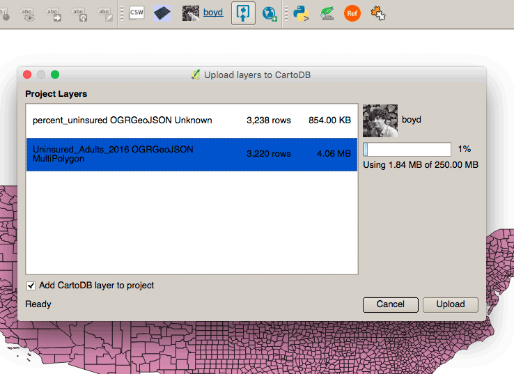
Figure 25: Uploading layers to CARTO
The Upload layers to CARTO dialog box will indicate that the upload was successful.
Switch back to your CARTO account within your web browser. Make sure you're in the Datasets view of your dashboard. It may take a few moments for CARTO to connect the new dataset within their servers. When complete, you'll see your uninsured_adults_county within your datasets view, along with the cb_2014_us_county_20m layer we imported earlier.
Now that we have our uninsured adults data tied to our county geometries and we're back in CARTO let's use that dataset to make a quick web map.
Find your newly added layer in CARTO Datasets and select the layer. You'll notice the column names from CSV file have the name of the file as a prefix. Since we saved the layer in QGIS as a GeoJSON, we should have the full field. We just need to identify which field is the 2016 uninsured rates. Once you find the column, rename it so that it's easier to locate.
We can then adjust the number of classes (CARTO curiously calls them "Buckets"), as well as the method of Quantification. Try changing the quantification method between equal area and quantiles to inspect the differences in the rendered map. CARTO's interface quickly allow us to produce a choropleth map of these uninsured adult data.
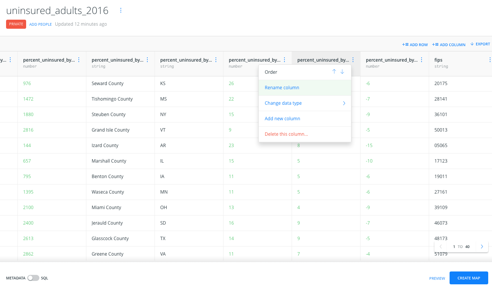
Figure 26: Renaming fields in CARTO to make them easier to use
Click on Create Map to begin the visualization. Select the layer in Builder and then the STYLE panel. Instead of changing the polygon's fill the same way for all polygons, we are going to change the polygon based on field value. Select BY VALUE and find the 2016 uninsured rate column.
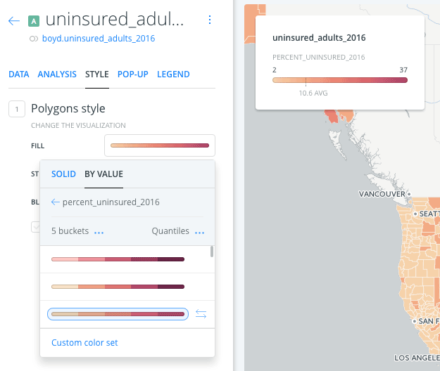
Figure 27: Creating a choropleth map using CARTO Builder
Continue to style the other properties for your polygon and consider changing basemaps. Zoom in and out to see how your styles look different at different zoom levels. CARTO has many color palettes to use. While the color choice is largely up to the map maker, you should avoid using divergent color schemes on data without a known total average. We see that CARTO adds a legend and an estimated average, presumably for the US uninsured rates. However, you cannot do statistics on derived rates like percentages, so some of the features offered might be dubious. Consider two counties. One county has one million people and an uninsured rate of 10% and another county has one hundred people at a 20% rate does NOT make a combined 15% average for those two counties.
Before we publish this map, switch to the CartoCSS editor. We can see that Builder has added additional CartoCSS rules. Again, we're not going to dive deep into mastering CartoCSS right now. Making adjustments in Builder and toggling back to inspect the changes in the CartoCSS editor is a good way to facilitate your understanding of how to the CartoCSS rules work.
#layer {
polygon-fill: ramp([percent_uninsured_2016],
(#ffc6c4, #ee919b, #cc607d, #9e3963, #672044),
quantiles);
line-width: 0.2;
line-color: #000000;
line-opacity: 0.5;
}
Builder utilizes a preprocessing function polygon-fill: ramp to create polygon-fill color gradient in CartoCSS. Polygon-fill color values are drawn from values in the percent_uninsured_2016 field and classified into 5 buckets (denoted by the list of 5 hexadecimal color values) using the quantiles classification method. We can manually create a color ramp by removing the ramp function and using the code below:
#layer [percent_uninsured_2016 <=37]
{ polygon-fill: #672044;
}
#layer [percent_uninsured_2016 <=25]
{ polygon-fill: #9e3963;
}
#layer [percent_uninsured_2016 <=15]
{ polygon-fill: #cc607d;
}
#layer [percent_uninsured_2016 <=10]
{ polygon-fill: #ee919b;
}
#layer [percent_uninsured_2016 <=5]
{ polygon-fill: #ffc6c4;
}
#layer {
line-width: 0.2;
line-color: #000000;
line-opacity: 0.5;
}
Apply these rules in the layer's STYLE panel:
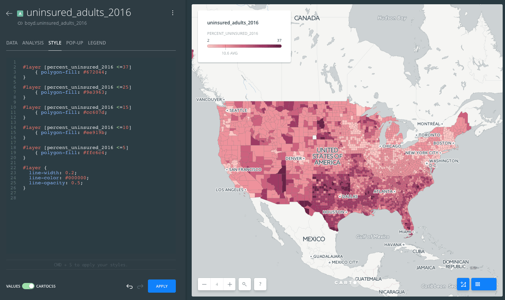
Figure 28: Using cascading styles in CartoCSS
The first #layer style rule selects all counties with a percent uninsured less than or equal to 37% with a condition expression enclosed with square brackets percent_uninsured_2016 <=37. That's all counties in our uninsured_adults_county dataset since the highest uninsured rate is 37%. This rule applies a polygon-fill color to all counties. Below this, we see additional rules that select increasing smaller subsets of counties and applies different fill colors. CARTO is using these conditional statements to set the classification breaks on our map, and then applying a new style rule to each polygon.
The CartoCSS rules are applied from top to bottom, i.e., they cascade down the chain, and can be changed. The last #layer style contains only rules that symbolize the polygon outline. It's on bottom so that it can be drawn last.
Since using custom CartoCSS rules causes our legend to break in CARTO currently (maybe a bug that hasn't been smoothed out), switch back the VALUES and CLEAR the custom CartoCSS rules.
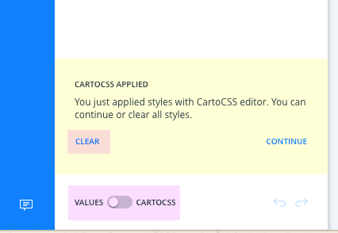
Figure 29: Clear the CartoCSS rules
Let's add interactivity to our map before we publish. Select the POP-UP panel, which will allow users to interrogate the layer's attributes. We have to methods to fire a pop-up window; click and hover. Click is the only usable method on touch screens and hover is most useful for point and line features. Hover can be very annoying on continuous polygon features because the pop-up will never disappear.
Select the feature attributes that you would like to present to a user and change the column names to something friendlier. You can drag and reorder values in the pop-up window. While in builder the interactivity seems buggy, but this will disappear after you publish your map.
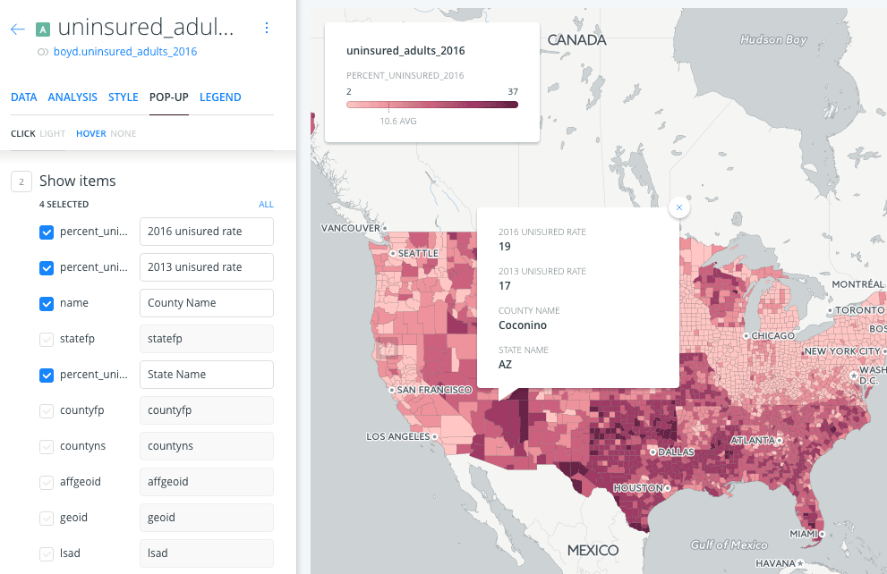
Figure 30: Adding pop-up windows in Builder
Finally, explore the LEGEND panel and ADD ITEMS to your legend. The top title in the legend is the name of your layer, so change it to a friendlier title. Experiment with different settings to discover the most useful combination.
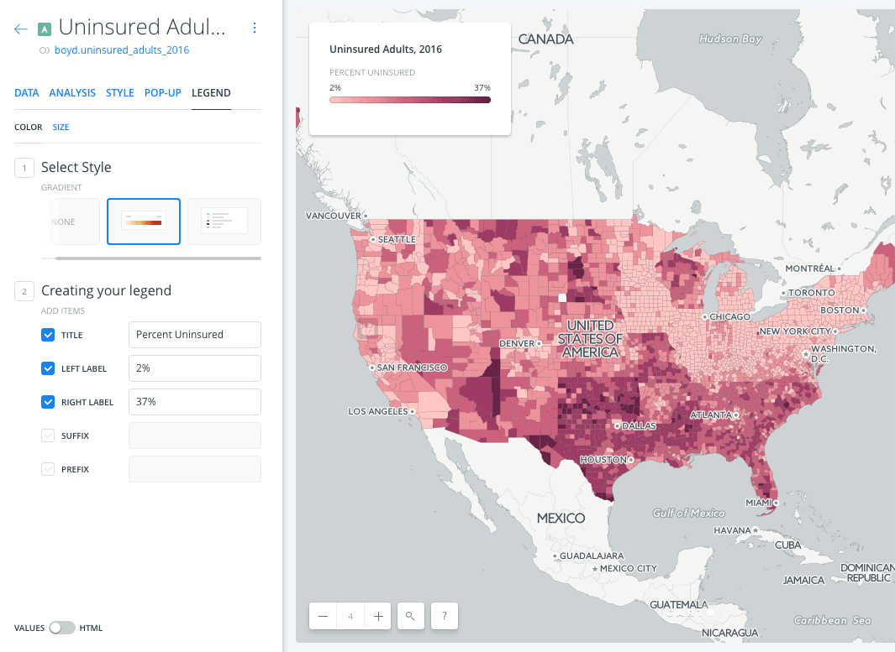
Figure 31: Adding a legend in Builder
Click on the back arrow icon to get your map layer list.Before we publish the map via the SHARE button, we need to modify the Map Options, Rename the map, and give it metadata.
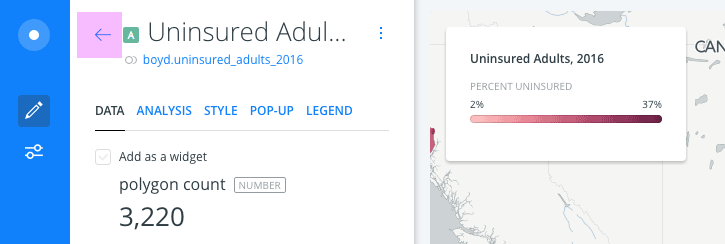
Figure 32: Getting back to your map layers
As with our layers, we need to Edit Metadata... and Rename the map. This will be the only contextual information presented to the visitor, so we be concise, yet detailed.
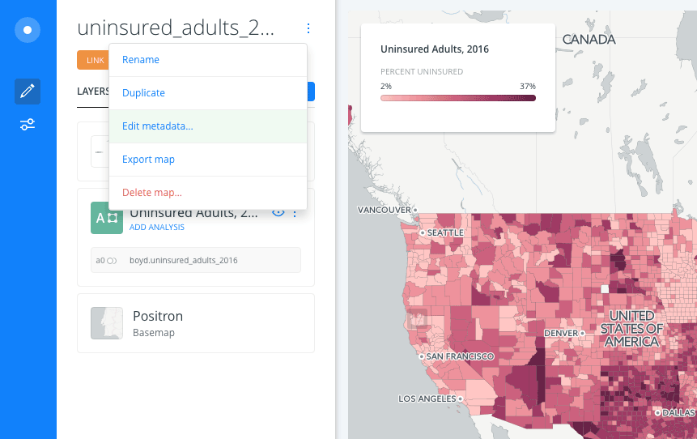
Figure 33: Getting back to your map layers
Select the Map Options icon in the left blue bar. Here we can modify options for the map such as a Search box, Scroll wheel zoom, and Show Blue Bar.
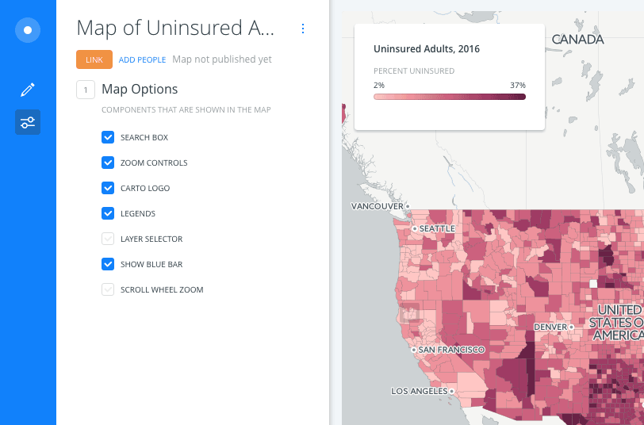
Figure 34: Changing map options
After you've played around with some of these adjustments, click SHARE in the lower right corner of the Builder panel. The next screen allows sharing within our New Maps Plus community on CARTO, which is not public. If you select PUBLISH you'll be presented with two publishing options: 1) to copy a link to a live version of the map, 2.) to embed the map within an iframe, which then is inserted into a webpage or blog. Copy the link to the map, open a new browser tab or window, and paste in the URL link. You'll see a working version of your map.
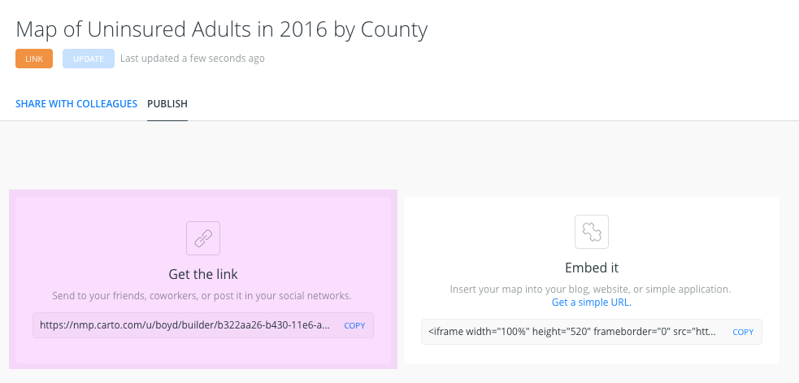 Figure 35: Publish map and getting the link
If you need to update your map, revisit this screen and press UPDATE. The LINK button allows you to configure the privacy of your map.
This published map is different than the dataset you've been working with in the map view. To continue to work on the map, return to the map view, make updates, and again click Publish to update your map.
Note that by default CARTO renames this map as a copy of the original data source. Feel free to rename the published two whatever you'd like. Also notice that the published map will retain the original zoom and pan level at which it's set within the Map view when you publish it. To change this, simply adjust the display in some way and click Publish again.
You can now share this map with the world!